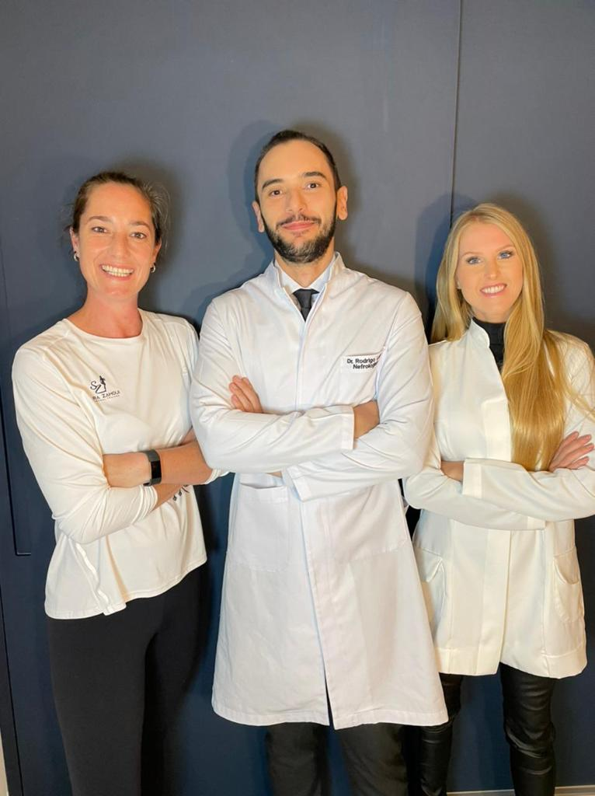

Nutrologia
Especialidade médica dedicada ao diagnóstico, prevenção e tratamento das doenças relacionadas à nutrição e ao comportamento alimentar.
Especialidade médica dedicada ao diagnóstico, prevenção e tratamento das doenças relacionadas à nutrição e ao comportamento alimentar.
Especialidade médica voltada ao diagnóstico, tratamento e acompanhamento das doenças relacionadas aos rins e ao sistema urinário.
Plano de acompanhamento individualizado, com atenção aos hábitos alimentares, exames laboratoriais e objetivos definidos em consulta.

Quem é o Dr. Rodrigo
Dr. Rodrigo Leite atua nas áreas de Nutrologia e Nefrologia, com atendimento voltado à avaliação clínica individualizada, prevenção e acompanhamento da saúde metabólica, nutricional e renal. Para esta versão demonstrativa do site, apresentamos como formação acadêmica ilustrativa graduação em Medicina, residência médica em Clínica Médica e especializações em Nefrologia e Nutrologia.
Nossa equipe
Atendimento médico com foco na avaliação do estado nutricional, metabolismo e saúde renal, buscando integrar exames, histórico clínico e hábitos de vida em um acompanhamento personalizado.
Formação em Nutrição, com pós-graduação em Nutrição Clínica e atuação integrada no acompanhamento alimentar de adultos.
Formação em Medicina, com residência em Clínica Médica e interesse em prevenção, saúde metabólica e acompanhamento multidisciplinar.
O que oferecemos
Consulta direcionada à análise do estado nutricional, composição corporal, hábitos alimentares, histórico clínico e exames laboratoriais.
Acompanhamento clínico de alterações metabólicas e fatores relacionados à alimentação, sempre de acordo com avaliação médica individual.
Avaliação e acompanhamento da função renal, pressão arterial e fatores de risco relacionados aos rins.
Avaliação clínica preventiva com análise do histórico de saúde e definição dos exames necessários conforme indicação médica.
Acompanhamento conjunto entre médico e nutrição para organizar hábitos alimentares e objetivos definidos durante as consultas.
Consultas de retorno para avaliação da evolução, revisão de exames e ajustes no plano de acompanhamento quando necessários.
“Atendimento muito atencioso e explicações claras durante toda a consulta. Saí com uma visão muito melhor dos próximos passos do meu acompanhamento.”
“Gostei da organização da consulta e da atenção aos exames e ao meu histórico. O acompanhamento foi explicado de forma simples e objetiva.”
“Equipe acolhedora e atendimento pontual. As orientações foram apresentadas com calma e de maneira fácil de entender.”
Preencha o formulário abaixo para agendar sua consulta. Ao enviar, você será direcionado para o WhatsApp do consultório com a mensagem já preenchida.